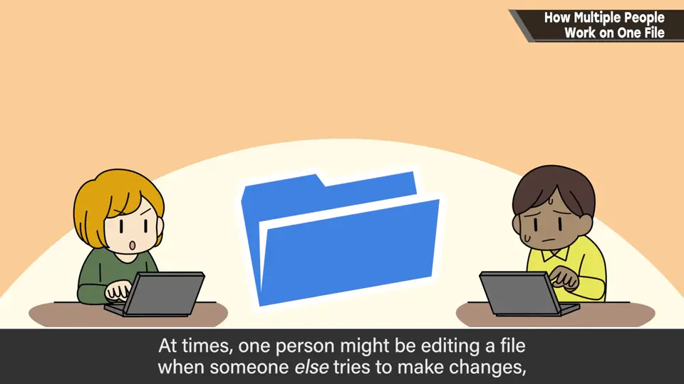
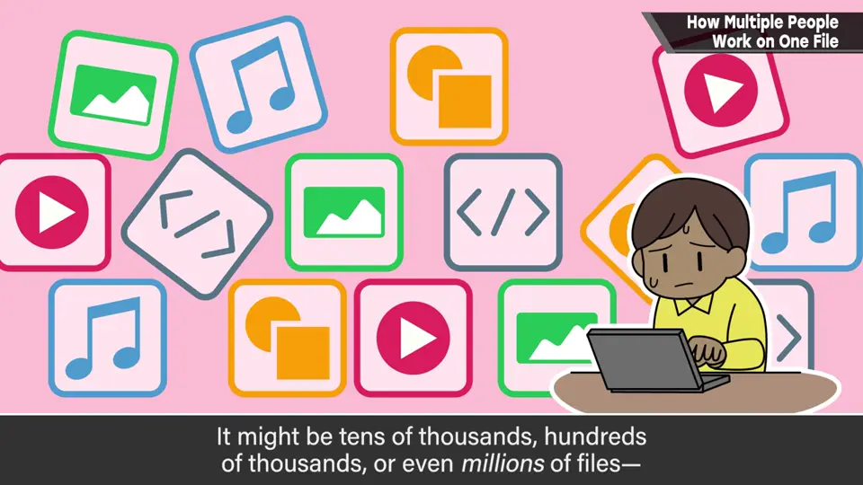
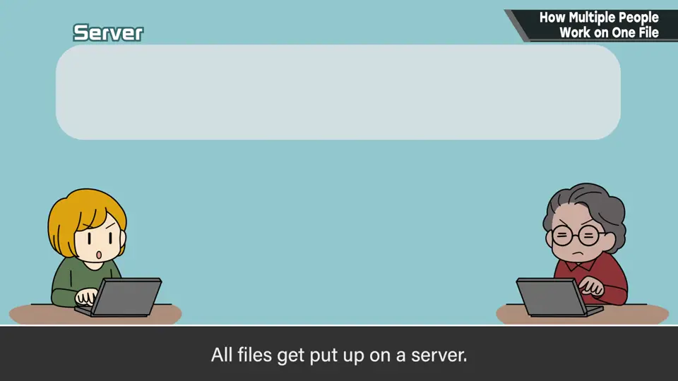
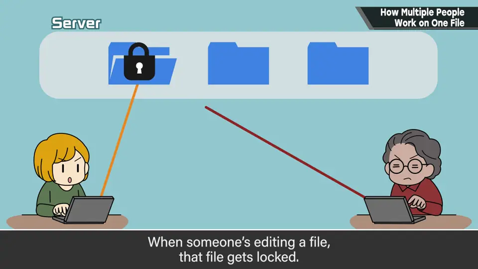
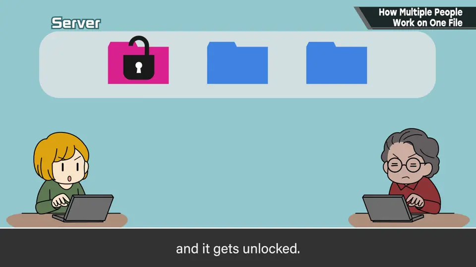
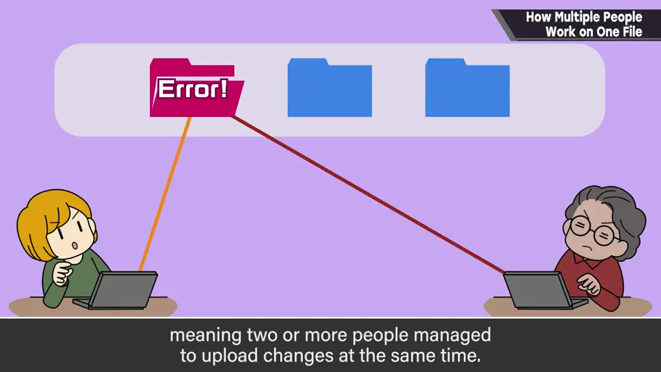
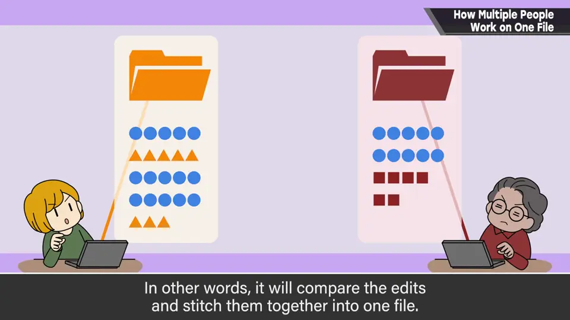
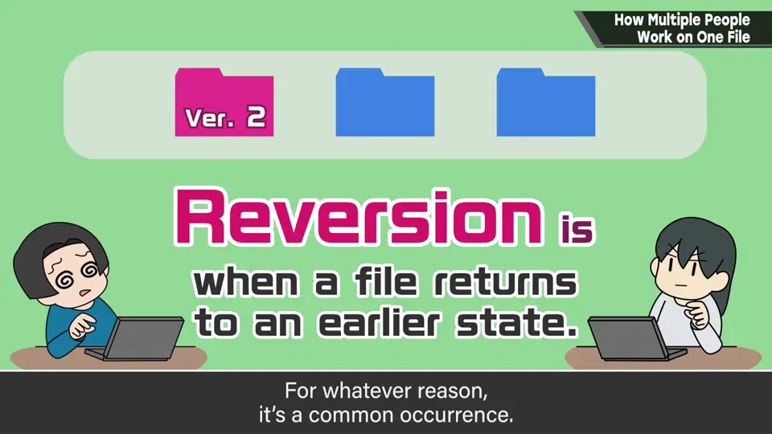
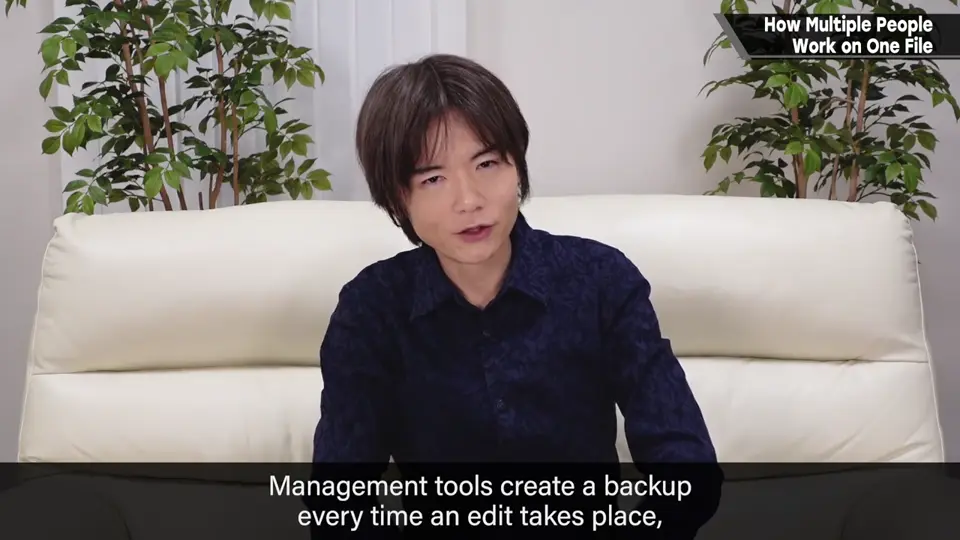

速览
团队规模大时，几百人持续做同一款游戏，某人改的文件也可能有别人在编辑，却不会撞车——这是怎么做到的？至少以前的樱井这么想过，所以讲讲概要，很简单。游戏的制作物分成无数文件，几万、几十万甚至几百万，随制作规模增加。方法有好几种，但大多数情况下文件由某种管理工具监视，全部放在服务器上。有人要改文件时，给它上锁，编辑后上传服务器再解锁，基本就是重复这些。但改大文件时只能一个人编辑，效率有点差；而且不知为何还会出现两人以上重复编辑撞车的情况，这时管理工具会尝试合并——比对编辑处缝合起来，有时能解决，但仍有矛盾时就要手工编辑。理论上应能顺利进行，却不知为何会发生「回退（先祖返り）」：某人的编辑完全消失，回到编辑前的状态，而且挺常见。管理工具每次编辑都会备份，运气好的话回到上一个版本就能复活。理论上没问题、实际用却频繁出问题——今天许多项目依然依赖这种不可思议的管理工具在运转。
1. 几百人做一个游戏 0:04
团队规模大时，几百名制作者持续做同一款游戏。某人改的文件，也可能有别人在编辑——为什么不会撞车呢？至少以前的樱井这么想过。所以简单讲讲概要。


游戏的制作物分成无数文件：几万、几十万还是几百万不得而知，与游戏的制作规模成正比地增加。
2. 上锁与解锁 0:49
有好几种方法，但大多数情况下文件由某种管理工具监视，全部放在服务器上。



基本就是重复这个过程。但改大文件时只能一个人编辑，效率有点差。
3. 撞车与合并 1:20
不知为何也会被重复编辑，两人以上的编辑撞车。这时管理工具会尝试「合并」：比对各自编辑的地方，缝合在一起。


这样有时能解决，但仍有矛盾时就必须手工编辑。
4. 不可思议的「回退」 1:50
照理说这样应该能顺利进行，但不知为何会发生「回退」：某人编辑的内容完全消失，回到编辑前的状态。而且不知为何很常见。


理论上没问题，实际用起来却不知为何频繁出问题——今天许多项目依然依赖这种不可思议的管理工具在运转。
自测题
1. 多人编辑时，管理工具的基本流程是什么？
文件都在服务器上；编辑前上锁、编辑后上传服务器、再解锁。 0:56
2. 两人编辑撞车时工具会怎么做？
尝试合并——比对编辑处缝合；仍有矛盾时需要手工编辑。 1:31
3. 什么是「回退」？如何补救？
某人的编辑消失、文件回到编辑前；管理工具每次编辑有备份，运气好退回上一版即可恢复。 1:56